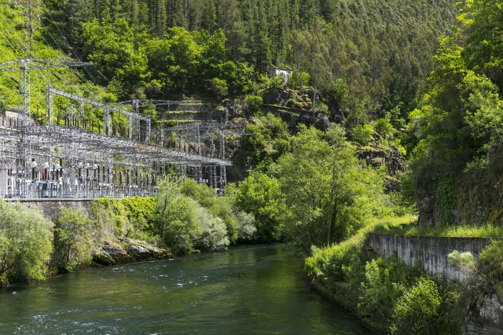

Las energías limpias consisten en unos sistemas de producción de energía que excluyen cualquier tipo de contaminación, principalmente por emisión de gases de efecto invernadero, como el CO2, causantes del cambio climático.
Se obtiene del sol mediante paneles solares.
Proviene del viento y se captura con aerogeneradores.
Generada por el agua en movimiento, como ríos y presas.
Proviene de la materia orgánica, como residuos vegetales, residuos agrícolas, restos de madera y otros desechos biodegradables.
Se obtiene a partir de la descomposición de la materia orgánica.
Son los combustibles que se producen, directa o indirectamente, a partir de recursos naturales.
La energía hidroeléctrica es la energía obtenida a partir del movimiento del agua. Se produce en centrales hidroeléctricas, donde el agua de ríos o embalses pasa por turbinas, haciéndolas girar y generando electricidad mediante un generador. Es una fuente de energía renovable y limpia porque no emite gases contaminantes y aprovecha el ciclo natural del agua. Sin embargo, la construcción de represas puede afectar los ecosistemas y comunidades cercanas.
| Imagen | Tipo | Descripción |
|---|---|---|
|  | Centrales de pasada | Aprovechan el flujo constante de agua sin embalses. |
| Centrales con embalse | Utilizan embalses para regular el flujo de agua. | |
| Centrales de bombeo | Almacenan agua en embalses superiores para alta demanda. | |
| Centrales de derivación | Desvían parte del flujo de agua minimizando impacto ambiental. |
Aunque las configuraciones pueden variar, los componentes esenciales son: